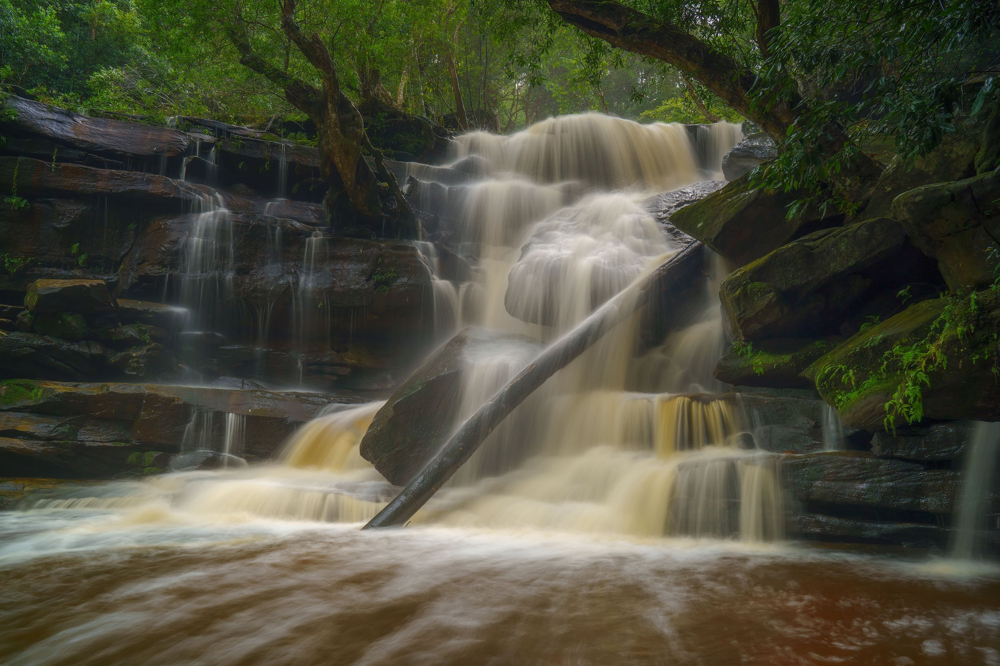
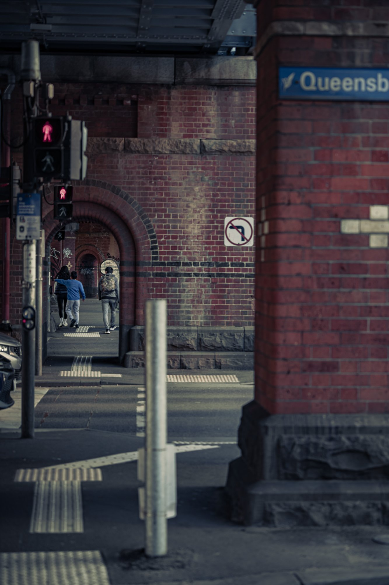

Coastal rock shelves, tidal estuaries, and headlands across 13 regional locations.

Candid human moments, geometric shadows, and city rhythms from Sydney to London.
Historic streets, Mediterranean textures, and island light across England, Europe, and Asia.
Structural lines, glass reflections, and modern monolithic forms.
Star trails, deep night skies over Mt Wondabyne, and neon-lit streetscapes.
Botanical symmetry, native birdlife, and subtle textures in the Australian landscape.
Central Coast Cars & Coffee, Brickman Lego exhibits, and documentary gatherings.
Pitchside tension, stadium atmosphere, and Central Coast Mariners action.